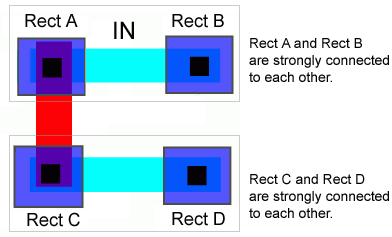
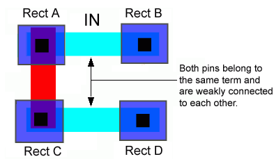
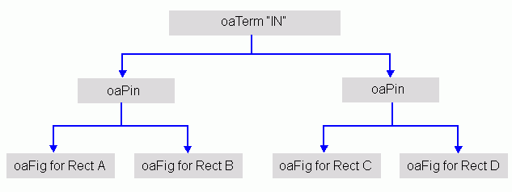
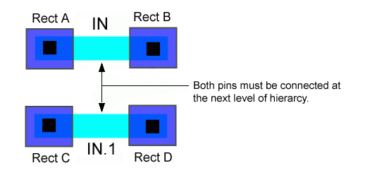
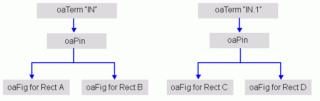

|
 |
 |
||||||
|
|
|
||||||
In previous releases of OpenAccess, strong and weak connections were modeled with pin groups, and pins could have a single oaFig. However, routers are more efficient when polygonal or rectilinear pins are decomposed into rectangles.
To address this, OpenAccess 2.2 introduces a new approach for modeling pins (oaPins).
The following LEF representation demonstrates oaPinFigs that are strongly connected, and oaPins that are weakly connected.
PIN IN PORT RectA; RectB; END PORT RectC; RectD; END END IN
Two metal rectangles that are part of the same LEF port are oaFigs on the same oaPin. In OpenAccess, the two rectangles are said to be strongly connected:

Both oaPins belong to the same oaTerm, which corresponds to the LEFpin “IN”. The pins are said to be weakly connected:

This is represented as follows in OpenAccess:

A MUSTJOIN set indicates that some connections within a master are incompletely implemented in the instantiating design. These connections must be completed for each instance. Terminals in a MUSTJOIN set must be connected at the next level of hierarchy. Each terminal in a MUSTJOIN set must come from a different, non-equivalent net.
The following LEF representation demonstrates MUSTJOIN sets.
PIN IN PORT RectA; RectB; END END IN PIN IN.1 MUSTJOIN IN; PORT RectC; RectD; END END IN.1

This is represented as follows in OpenAccess:

The oaInstPin class was used by routes and parasitics in previous versions of OpenAccess. For a route ending at an instTerm of a terminal with multiple pins, oaInstPin specified which of those pins the route touched.
With multiple figs per pin in OpenAccess 2.2, oaInstPin is no longer sufficient.
In OpenAccess 2.2, routes and parasitics connect to instTerms.
You can use coordinates (oaPoint and layer) to distinguish between
Routers and parasitic stitchers need to interpret the coordinates.

Copyright © 2003-2010 Cadence Design Systems, Inc.
All rights reserved.